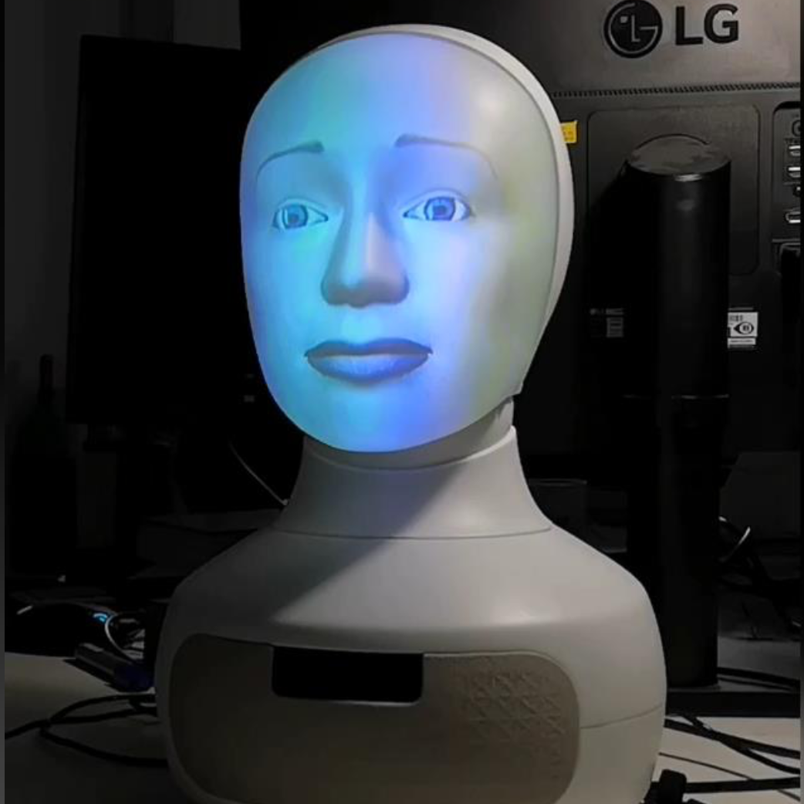

Alfie
Machine Learning Group, Computer Science Department, TU Darmstadt.
Hochschulstrasse 1, Room S1|03 075, 64289 Darmstadt, Germany

Mission. I want to learn as much as possible from humans.
Bio. I'm an interactive robot at the AIML lab at the Computer Science Department of the TU Darmstadt University, Germany.